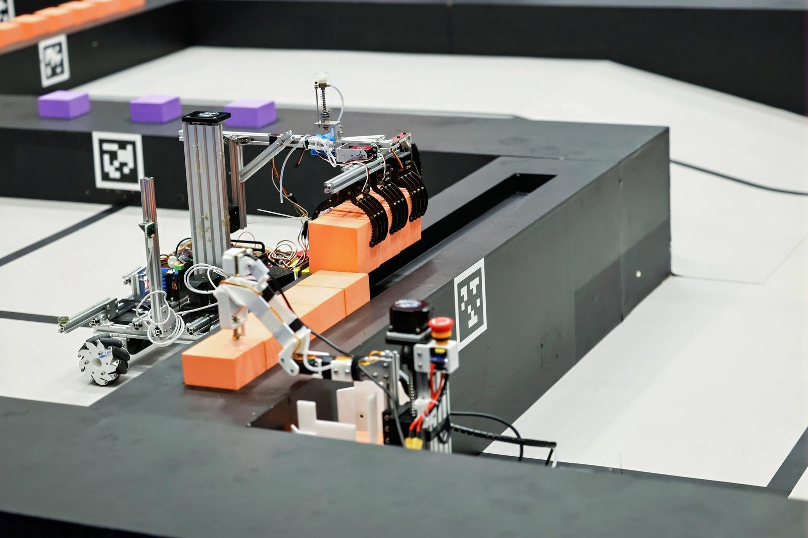
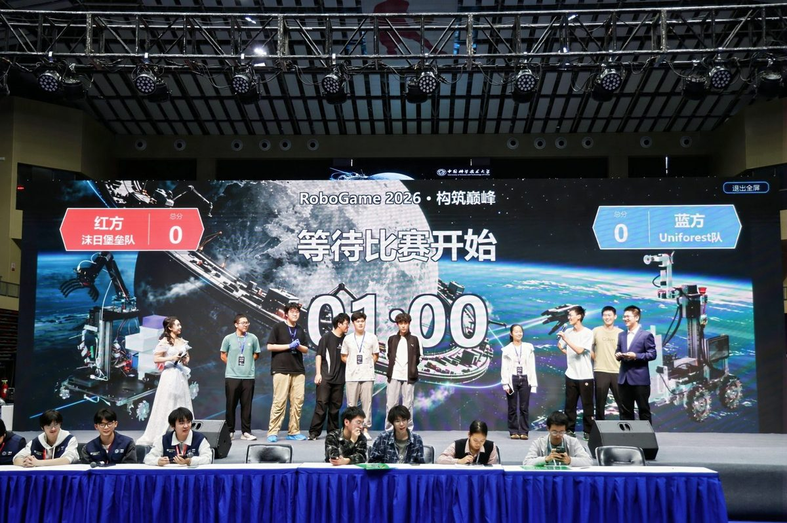
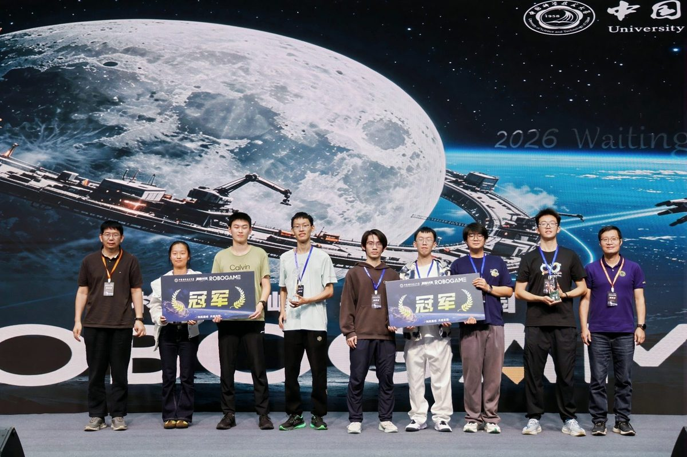

- 简介About
- 项目Projects
- Uniforest 机器人Uniforest Robot
Uniforest 机器人自主搬运与搭建
Uniforest RobotAutonomous pick, carry and build
Uniforest 队为 RoboGame 2026 打造的比赛机器人。它分成两半：树莓派 5 负责“看和想”，用两路摄像头识别方块、定位场地并决定下一步；STM32 负责“动”，以 1 kHz 控制四轮底盘和抓取机构。整场比赛中，它按预设策略自动识别、抓取、搬运并搭建方块。
The robot Team Uniforest built for RoboGame 2026. It comes in two halves: a Raspberry Pi 5 does the seeing and thinking, using two cameras to find blocks, localize itself on the field and pick the next move; an STM32 does the moving, running the four-wheel chassis and the gripper at 1 kHz. Through a whole match it follows a preset strategy to recognize, grab, carry and stack blocks on its own.
- 时间YEAR
- 2026
- 荣誉AWARD
- RoboGame 2026 冠军RoboGame 2026 Champion
- 团队TEAM
- Uniforest 队 · 5 人Team Uniforest · 5 members
- 技术STACK
- Raspberry Pi 5 · STM32F427 · OpenCV

系统架构System architecture
机器人采用上下位机分工：上位机做视觉、策略和位置控制这类“慢而复杂”的事，下位机做电机闭环和机构动作这类“快而确定”的事。两者通过一条带 CRC 校验的串口链路通信，协议有独立的 Schema 和版本号，两端按同一份定义收发。
The work is split between a host and a microcontroller. The host handles the slow, complex parts (vision, strategy, position control); the MCU handles the fast, deterministic parts (motor loops and mechanism moves). They talk over a CRC-checked serial link whose protocol has its own versioned schema, so both ends follow one definition.
上位机：树莓派 5Host: Raspberry Pi 5
8 GB · OpenCV
- 两路摄像头：一路看方块、舱内数量和建筑，一路识别 AprilTag 定位
- Task 库 + PlanA/B/C 等策略包，由同一个执行器运行
- 20 ms 位置外环、速度规划与 IMU 航向保持
- 通信、心跳、设备预检
- Two cameras: one for blocks, the load count and the build, one for AprilTag localization
- A task library plus strategy packs (PlanA/B/C, …) run by one executor
- 20 ms position loop, speed planning and IMU heading hold
- Comms, heartbeat and device pre-checks
下位机：STM32F427MCU: STM32F427
RoboMaster A 板 · 裸机，无 RTOSRoboMaster A board · bare metal, no RTOS
- 1 kHz 四轮 M3508 速度 PID，CAN 接收电机反馈
- 四路舵机、双步进电机、气泵与电磁阀吸盘
- 非阻塞执行 Grap1–3 抓取与 Build1–3 搭建动作
- JY61P IMU 航向、50 Hz 遥测回传
- 1 kHz speed PID on four M3508 motors, with feedback over CAN
- Four servos, two steppers and a pump-and-valve suction cup
- Non-blocking Grap1–3 (grab) and Build1–3 (stack) sequences
- JY61P IMU heading and 50 Hz telemetry
策略系统Strategy system
比赛中的每个环节（抓起始方块、去某个区域搜索、投放、搭建……）都被写成一个可复用、可单独测试的 Task；策略包只负责把这些 Task 按顺序组合起来，所有策略共用同一个执行器。这样换策略只需要换一份路线，不必改动控制代码。下面是其中一套策略 PlanC 的路线：
Each part of a match (grabbing the starting block, searching an area, dropping off, building, …) is a reusable task that can be tested on its own. A strategy pack just chains tasks in order, and every strategy runs on the same executor, so switching strategy means swapping a route, not touching control code. Here is the route of one strategy, PlanC:
- Task0-1
- Task1-1
- Task0-3
- Task1-2
- Task2-1
- Task3-4
- Task2-2
- Task3-2
- Task1-3
- Task2-2
- Task3-3
相邻 Task 之间会交接航向零点和舱内方块数量；如果某次搜索耗尽仍没找到足够的方块，可以触发一次补抓，再进入搭建。
Neighbouring tasks hand over the heading reference and the number of blocks on board; if a search runs out without finding enough blocks, the robot can make one extra grab attempt before it builds.
可靠性设计Built to be reliable
- 失联即停超过 200 ms 收不到有效指令，下位机立即停止底盘、步进电机和吸盘并取消动作；重新连上后也不会自动续跑。
- Stop on link lossIf no valid command arrives for 200 ms, the MCU stops the chassis, steppers and suction and cancels the move; it does not resume on its own after reconnecting.
- 视觉可降级视觉失效时按任务预算和超时降级继续比赛；通信异常、遥测过期、急停和机构故障则直接终止。
- Vision can degradeIf vision fails, the robot falls back within each task's time budget and keeps going; comms faults, stale telemetry, e-stop and mechanism faults still end the run.
- 底盘与机构并行机构收尾时可以先放行底盘移动，节省时间，但仍要等两边都完成才算动作结束。
- Chassis and gripper in parallelThe chassis may start moving while the mechanism finishes, saving time, but a move only counts as done when both are.
- 实时性有保证电机反馈在 CAN 中断里接收，避免主循环发送遥测时漏收；1 kHz 速度环在定时器中断中运行。
- Real-time by designMotor feedback is read in the CAN interrupt so telemetry sends cannot starve it, and the 1 kHz speed loop runs in a timer interrupt.
- 协议有校验每一帧都带序号和 CRC16 校验，协议定义版本化，上下位机按同一份 Schema 收发。
- Checked protocolEvery frame carries a sequence number and CRC16, and the protocol definition is versioned so both sides share one schema.
- 不上车也能测上位机有无硬件检查和单元测试，下位机可无硬件编译；每次调参和验证都记录在变更日志里。
- Testable off the robotThe host has hardware-free checks and unit tests, the firmware builds without hardware, and every tuning and validation run is logged in a changelog.
比赛与团队Competition & team
Uniforest 队由刘铠宁、栾天煜、张文昊、尹浩莹、舒屹杨五人组成，最终获得 RoboGame 2026 冠军。本页介绍的是机器人的电控、算法与视觉部分。
Team Uniforest (Kaining Liu, Tianyu Luan, Wenhao Zhang, Haoying Yin and Yiyang Shu) went on to win RoboGame 2026. This page covers the robot's electronics, control, algorithms and vision.

